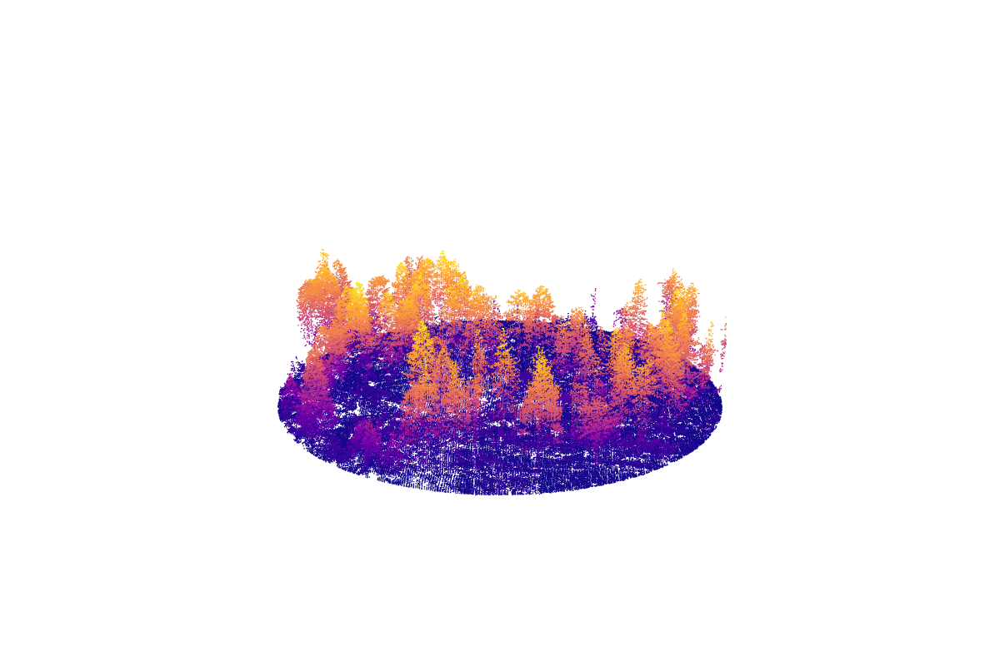
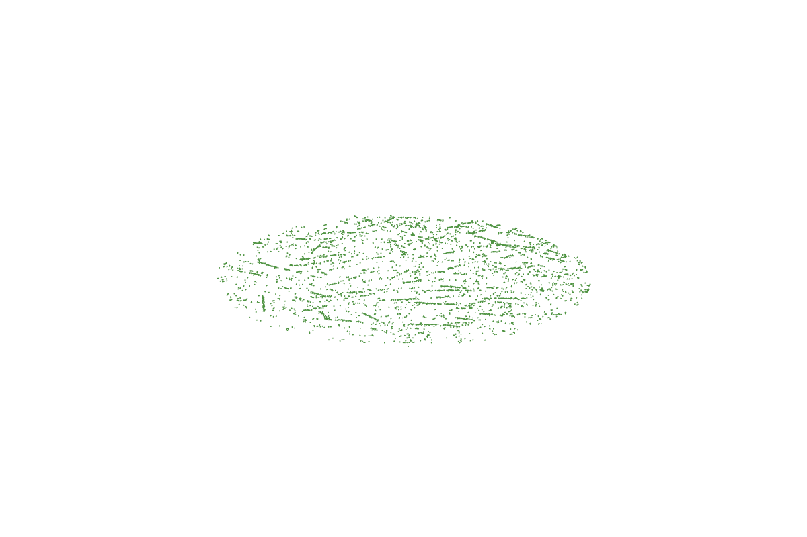
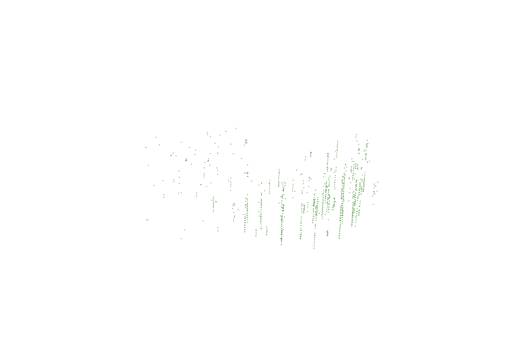
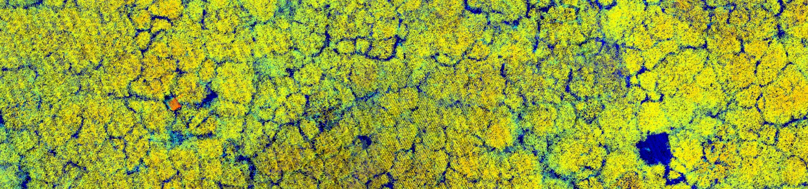
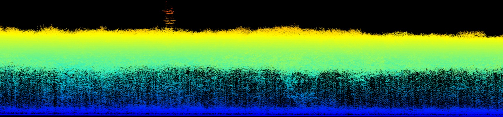

Licht für den Wald
Anwendungsmöglichkeiten von Lidar im Forstbereich
Funktionsweise
Lidar - Light Detection and Ranging


Plattformen

- Spaceborne laser scanning (SLS) - global
- Airborne laser scanning (ALS) - 10-1000 km²
- Unmanned aerial vehicle laser scanning (ULS) - 0.02-10 km²
- Mobile laser scanning (MLS) - 5-100 ha
- Personal laser scanning (PLS) - 0.25-5 ha
- Terrestrial laser scanning (TLS) - 0.01-1 ha
aus (Guo et al. 2022)
Niedersachsen

Figure 1: Verfügbarkeit von ALS Daten in Niedersachsen nach Aufnahmejahr
ALS Datenverfügbarkeit Niedersachsen

Figure 2: Verfügbarkeit von ALS Daten in Niedersachsen nach Aufnahmemonat
Digitaler Zwilling Deutschland
Projekt für eine bundesweite Lidar-Erfassung

- Befliegung ab 2023(?)
- Datenverfügbarkeit ab ?
- Wiederholung alle 3 Jahre geplant(?), vorerst 2x
- Befliegung März bis Oktober (Vegetationszeit)
- ca. >=40 Punkte (Pulses) pro m²
- Single Photon Lidar (anderes Sensorprinzip)
- Daten nicht frei zugänglich
- primär für Bundesbehörden gedacht
abgeleitete Standardprodukte
Punkte werden reduziert auf Oberfläche / Gelände
Gelände
= Digitales Geländemodell (DGM)
= Digital Terrain Model (DTM)
Oberfläche
= Digitales Oberflächenmodell (DOM)
= Digital Surface Model (DSM)
normalisierte Oberfläche
= normalisiertes Oberfllächenmodell (nDOM)
= normalized Surface Model (nDSM)
= Canopy Height Model (CHM)

Punktbasierte Analysen




Publikationen

Figure 3: Number of publications by year for (lidar OR laser) AND (forestry OR forest OR tree) (from dimensions.ai)
19 der 20 meistzitierten Wisschenschaftler kommen aus Skandinavien oder Nordamerika
Waldstruktur

Kronenlücken

Figure 5: Forest Gap Change Detection (from https://github.com/carlos-alberto-silva/ForestGapR)
Umweltmonitoring


LAD/ LAI
from Almeida et al. (2019)
Stichprobeninventuren

aus Weiser et al. (2022)
Stichprobeninventuren
für ein stratifiziertes Sampling neuer oder ergänzender Stichprobenpunkte

aus (Goodbody et al. 2023)
Stichprobeninventuren

aus Jucker et al. (2017)
Biomasse Modellierung

Figure 6: Landscape scale extrapolation of wood volume (from Levick, Hessenmöller, and Schulze (2016))
Waldwachstum

Figure 7: Approaches used to characterize change in forest attributes (from Tompalski et al. (2021))
Totholz

Figure 9: Graphical abstract of tree trunk detection with ALS data (from Heinaro et al. (2021))
Geomorphologie

Figure 10: Multiscale unsphericity curvature calculated from DTM as geomorphometric terrain index.
Hydrologie

Figure 11: Topographischer Feuchteindex (von julius-kuehn.de)
Hydrologie

Figure 12: Simulation des oberflächennaheeen Waserflusses (from baharmon.github.io)
Rückegassen

Figure 13: Skid trails derived from ALS data (from Lenoir et al. (2022))
TLS - Biomasse

Figure 15: 3D TLS data to study biomass of individual trees (from Calders et al. (2022))
PLS - Poltervermessung

Figure 17: Poltervermessung mit Smartphone (from afz-derwald)
SLS (GEDI) - Biomasse


Gelände


Tree detection

Figure 18: Example of individual tree detection from ALS data (from www.wur.nl)
Pflanzegesellschaften

Figure 19: Using Lidar to highlight legacy effects still affecting the current composition of understory plant communities and their responses to macro-environmental changes (from Lenoir et al. (2022))
Forst-Fernerkundungs Studien in Deutschland

Figure 20: Anzahl von Studien pro Bundesland und Orte mit den meisten Studien
aus Holzwarth et al. (2020)
Genutzte Sensoren in Deutschland

Figure 21: Anzahl der Studien sortiert nach Plattform und Sensor getrennt nach Untersuchungsebene
aus Holzwarth et al. (2020)
Lidar Sensoren

Figure 22: Comparison of lidar sensor types used in airborne systems (from Mandlburger, Lehner, and Pfeifer (2019))
ALS CHM vs. image based CHM

Figure 23: Comparison of ALS- and image-based canopy height model (from White et al. (2013))
Enhanced forest inventory

Figure 24: Enhanced forest inventory for continuous data integration
Terrain Produkte

Figure 25: Terrain model derived descriptors to support forest decisions (from Assmann et al. (2022))
Waldwachstum

Figure 26: Approaches used to estimate past change in forest inventory attributes (from Tompalski et al. (2021))